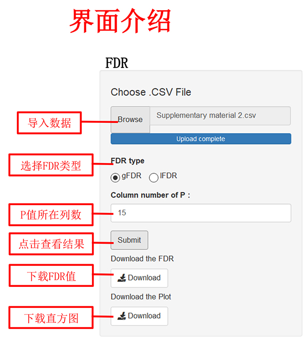
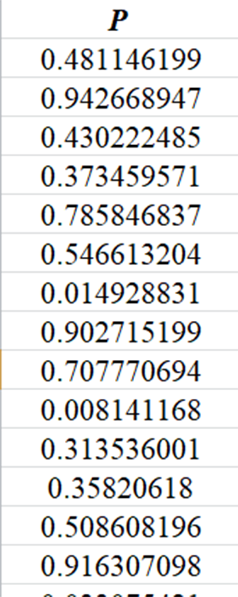
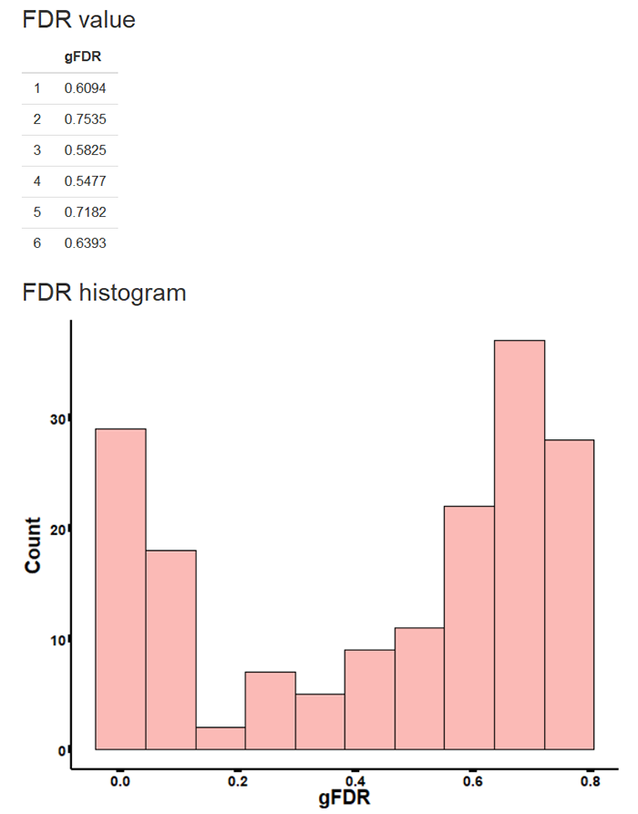

| 一、假阳性错误率简介 | |
| 传统的Bonferroni校正方法过于保守，检验效能大大降低。假阳性错误率（false discovery rate, FDR）的提出则有效解决高维数据的多重比较问题，其既能控制总体一类错误又不降低检验效能。FDR指假阳性数占总体阳性数的比例，其可分为gFDR (global false discovery rate)和lfdr (local false discovery rate)两类。gFDR指在规定的检验水准下被判定为阳性的结果中假阳性结果的比例，lfdr则为一次假设检验被判定为阳性结果时其为假阳性结果的概率。 |  |
| 二、数据格式 | |
|  | |
| 注： 1、数据格式为“.csv”，数据中避免中文、空格或特殊字符 2、数据变量名必须为英文、阿拉伯数字或下划线的组合 3、导入数据后，各变量所对应的列数可在输出界面显示和查询 |
|
| 三、输出结果展示 | |
| 输出结果包括前6个FDR值以及FDR值的直方图。下载表格中，提供所有FDR值。 示例如下： |
|
|  |